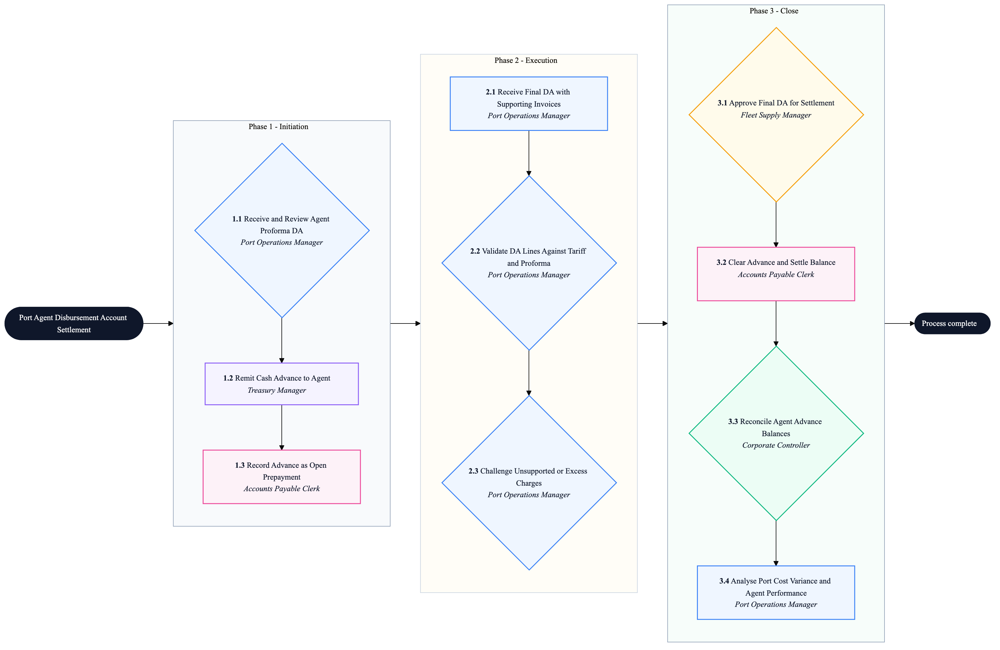

← Bridge Watch / Core Financials / Payables & Expenses
Settles port agent disbursement accounts. At every port call a local agent advances funds on the line's behalf for pilotage, towage, berth dues, mooring, garbage removal, immigration and other services, then submits a disbursement account with supporting third-party invoices for reimbursement. This is a shipping-specific process with no equivalent in standard corporate procure-to-pay, and it carries significant cash and control exposure.
Not a delivered Fusion pattern. Disbursement accounts are multi-line third-party pass-through claims against a cash advance, requiring an advance clearing mechanism and line-level validation. Expect a configured prepayment model plus an extension for DA structure and variance analysis.
How many port calls occur annually, how are disbursement accounts validated and approved today, and is there a standard DA format required of agents?

| Step | Activity | Role | System | Dec | Pain point |
|---|---|---|---|---|---|
| 1.1 | Receive and Review Agent Proforma DA | Port Operations Manager | Fusion Payables | Y | Proformas are estimates and agents habitually pad them, so the baseline for later variance analysis is soft |
| 1.2 | Remit Cash Advance to Agent | Treasury Manager | Fusion Cash Management | Late advances risk services being withheld at the port, which can delay sailing | |
| 1.3 | Record Advance as Open Prepayment | Accounts Payable Clerk | Fusion Payables | Advances recorded without a port call reference cannot be matched to the eventual DA | |
| 2.1 | Receive Final DA with Supporting Invoices | Port Operations Manager | Fusion Payables | Agents in some regions routinely submit final DAs months late, and there is limited leverage to compel them | |
| 2.2 | Validate DA Lines Against Tariff and Proforma | Port Operations Manager | Fusion Data Intelligence | Y | Third-party invoices arrive in local languages and currencies, and validating a pilotage charge in an unfamiliar jurisdiction is genuinely difficult |
| 2.3 | Challenge Unsupported or Excess Charges | Port Operations Manager | Fusion Payables | Y | Charges appearing on the final DA that were absent from the proforma are the most common dispute and the hardest to disprove |
| 3.1 | Approve Final DA for Settlement | Fleet Supply Manager | Fusion Payables | Y | Approvers rarely have port-specific knowledge to judge whether a charge is reasonable |
| 3.2 | Clear Advance and Settle Balance | Accounts Payable Clerk | Fusion Payables | Where the DA is lower than the advance the agent owes a refund, which is far harder to collect than paying a balance | |
| 3.3 | Reconcile Agent Advance Balances | Corporate Controller | Oracle ARCS | Y | Accumulated open advances across many agents represent real credit exposure that is rarely reported as such |
| 3.4 | Analyse Port Cost Variance and Agent Performance | Port Operations Manager | Fusion Data Intelligence | Without benchmarking across calls at the same port, systematic overcharging by an agent is invisible |